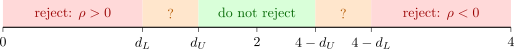

11.3 Testing for autocorrelation
All the tests use the least squares residuals \(e_t\). The oldest and most widely printed is the Durbin–Watson statistic.
Definition 11.3.1. The Durbin–Watson statistic is \[ d = \frac {\sum _{t=2}^n(e_t - e_{t-1})^2}{\sum _{t=1}^ne_t^2} = \frac {e'Ae}{e'e}, \] where \(A = D'D\) and \(D\) is the \((n - 1) \times n\) first-difference matrix, so that \(A\) is tridiagonal with diagonal \((1, 2, \dots , 2, 1)\) and \(-1\) on the neighbouring diagonals.
Theorem 11.3.2. Let \(\hat r = \sum _{t=2}^ne_te_{t-1}/\sum _{t=1}^ne_t^2\) be the first-order residual autocorrelation.
- (i)
- \(\displaystyle d = 2(1 - \hat r) - \frac {e_1^2 + e_n^2}{\sum e_t^2}\), so \(d \approx 2(1 - \hat r)\), and \(0 \leq d \leq 4\).
- (ii)
- Suppose \(X\) is non-stochastic with rank \(k\) and \(U \sim N(0, \sigma ^2I)\). Then \[ d \overset {d}{=} \frac {\sum _{i=1}^{n-k}\nu _i\eta _i^2}{\sum _{i=1}^{n-k}\eta _i^2}, \] where the \(\eta _i\) are independent \(N(0, 1)\) and \(\nu _1, \dots , \nu _{n-k}\) are the eigenvalues of \(C'AC\), \(C\) being any \(n \times (n - k)\) matrix with orthonormal columns spanning the column space of \(M\). The distribution of \(d\) therefore depends on \(X\).
- (iii)
- Under the conditions of (ii), \(\displaystyle E(d) = \frac {\tr (MA)}{n - k}\).
Proof. (i) Expanding the square, \[ \sum _{t=2}^n(e_t - e_{t-1})^2 = \sum _{t=2}^ne_t^2 + \sum _{t=1}^{n-1}e_t^2 - 2\sum _{t=2}^ne_te_{t-1} = 2\sum _{t=1}^ne_t^2 - e_1^2 - e_n^2 - 2\sum _{t=2}^ne_te_{t-1} ; \] divide by \(\sum e_t^2\). The bounds follow from \(0 \leq (e_t - e_{t-1})^2 \leq 2e_t^2 + 2e_{t-1}^2\), summed over \(t\), since each \(e_t^2\) appears at most twice.
(ii) \(M\) is symmetric idempotent of rank \(n - k\), so \(M = CC'\) with \(C'C = I_{n-k}\). Then \(e = MU = C\xi \), where \(\xi = C'U \sim N(0, \sigma ^2I_{n-k})\), and \(e'e = \xi '\xi \), \(e'Ae = \xi 'C'AC\xi \). Diagonalise \(C'AC = GNG'\) with \(G\) orthogonal and \(N = \operatorname {diag}(\nu _i)\), and put \(\eta = G'\xi /\sigma \sim N(0, I_{n-k})\). Then \(d = \eta 'N\eta /\eta '\eta \). The matrix \(C\), and with it the \(\nu _i\), is determined by \(X\).
(iii) Write \(d = \eta 'N\eta /\eta '\eta \). For a standard normal vector, the direction \(\eta /\|\eta \|\) is independent of the length \(\|\eta \|\), by the spherical symmetry of its density, and \(d\) depends only on the direction. Hence \(d\) and \(\eta '\eta \) are independent, and \[ \tr N = E(\eta 'N\eta ) = E(d\cdot \eta '\eta ) = E(d)\,E(\eta '\eta ) = (n - k)E(d) . \] Finally \(\tr N = \tr (C'AC) = \tr (ACC') = \tr (AM) = \tr (MA)\). □
If \(\hat r = 0\), \(d \approx 2\); strong positive autocorrelation pushes \(d\) towards \(0\), and strong negative autocorrelation towards \(4\). Part (ii) is the difficulty Durbin and Watson faced in 1950: the exact null distribution depends on the regressors, so no single table can be printed. Their solution used the fact that the eigenvalues of \(A\) are \(4\sin ^2\bigl (\pi j/(2n)\bigr )\), \(j = 0, \dots , n - 1\), which depend only on \(n\), and that, when \(X\) contains an intercept, the \(\nu _i\) are bracketed by these eigenvalues. This gives two statistics \(d_L \leq d \leq d_U\) whose distributions depend only on \(n\) and \(k\), and whose critical values were tabulated. The resulting bounds test of \(H_0\colon \rho = 0\) against \(\rho > 0\) is:
- reject \(H_0\) if \(d < d_L\);
- do not reject if \(d > d_U\);
- the test is inconclusive if \(d_L \leq d \leq d_U\).
Against \(\rho < 0\) the same rule is applied to \(4 - d\). Figure 10 shows the five regions. Modern software avoids the inconclusive zone by computing the exact \(p\)-value from (ii), either numerically or by simulation, as Software 11.7.1 does.

The Durbin–Watson test has three limitations. It tests only first-order autocorrelation; it requires an intercept and non-stochastic regressors; and, as Example 11.2.3 showed, it is biased towards \(2\) when a lagged dependent variable is present, which is exactly when autocorrelation does most harm. For the last case Durbin (1970) proposed the statistic \[ h = \hat r\sqrt {\frac {n}{1 - n\widehat \Var (b_1)}}, \] where \(b_1\) is the coefficient of \(Y_{t-1}\), which is asymptotically \(N(0, 1)\) under \(H_0\colon \rho = 0\). It cannot be computed when \(n\widehat \Var (b_1) \geq 1\), and it is unstable when \(n\widehat \Var (b_1)\) is close to \(1\). The Breusch–Godfrey test has none of these limitations.
Theorem 11.3.3 (Breusch–Godfrey). In the model \(Y_t = x_t'\beta + u_t\), where \(x_t\) may contain lagged values of \(Y\), let the disturbances follow the AR(\(p\)) scheme \(u_t = \rho _1u_{t-1} + \dots + \rho _pu_{t-p} + \varepsilon _t\) with \(\varepsilon _t\) independent \(N(0, \sigma ^2)\). The Lagrange multiplier statistic for \(H_0\colon \rho _1 = \dots = \rho _p = 0\) is \[ \text {LM} = nR^2, \] where \(R^2\) is from the auxiliary regression of \(e_t\) on \(x_t\) and \(e_{t-1}, \dots , e_{t-p}\) (with lagged residuals before the start of the sample set to zero). Under \(H_0\), \(\text {LM} \xrightarrow {d} \chi ^2_p\).
Proof. Conditionally on the initial observations, the log-likelihood is \(\ell = \text {const} - \frac n2\log \sigma ^2 - \frac {1}{2\sigma ^2}\sum _t\varepsilon _t^2\), where \[ \varepsilon _t(\beta , \rho ) = (Y_t - x_t'\beta ) - \sum _{j=1}^p\rho _j(Y_{t-j} - x_{t-j}'\beta ) . \] Let \(\theta = (\beta ', \rho _1, \dots , \rho _p)'\) and \(z_t = -\partial \varepsilon _t/\partial \theta \). At \(\rho = 0\), \(\partial \varepsilon _t/\partial \beta = -x_t\) and \(\partial \varepsilon _t/\partial \rho _j = -u_{t-j}\), so \(z_t = (x_t', u_{t-1}, \dots , u_{t-p})'\). The score is \(\partial \ell /\partial \theta = \sigma ^{-2}\sum _t\varepsilon _tz_t\), and the information matrix is asymptotically equivalent to \(\sigma ^{-2}\sum _tz_tz_t'\): the other term of the second derivative, \(\sigma ^{-2}\sum \varepsilon _t\,\partial ^2\varepsilon _t/\partial \theta \partial \theta '\), has expectation zero, because \(\varepsilon _t\) is independent of the past values that make up the second derivatives. The restricted estimates under \(H_0\) are least squares: \(\varepsilon _t = e_t\), \(\tilde \sigma ^2 = e'e/n\), and \(z_t\) becomes the row \((x_t', e_{t-1}, \dots , e_{t-p})\) of a matrix \(Z\). Hence \[ \text {LM} = s'I^{-1}s = \frac {e'Z}{\tilde \sigma ^2}\Bigl (\frac {Z'Z}{\tilde \sigma ^2}\Bigr )^{-1}\frac {Z'e}{\tilde \sigma ^2} = n\,\frac {e'Z(Z'Z)^{-1}Z'e}{e'e} , \] which is \(n\) times the \(R^2\) of the regression of \(e\) on \(Z\). (\(R^2\) is uncentred here, but \(e\) has mean zero when \(x_t\) contains an intercept, so it is the usual \(R^2\).) The \(\chi ^2_p\) limit is the general property of LM statistics stated in Section 9.3. □
The regressors \(x_t\) must be in the auxiliary regression. When they are strictly exogenous they contribute almost nothing, because \(X'e = 0\), and the test reduces to asking whether the lagged residuals explain the current one. When \(x_t\) includes \(Y_{t-1}\), the lagged residual is correlated with it, and omitting \(x_t\) would give the wrong distribution; including it is what makes the test valid where the Durbin–Watson test is not. An equivalent \(F\) form tests the joint significance of the lagged residuals in the auxiliary regression. The same statistic tests against an MA(\(p\)) alternative, since the two alternatives give the same score at \(\rho = 0\).
The third family of tests looks at the residual correlogram as a whole.
Proposition 11.3.4. Let \(\hat r_k = \sum _{t=k+1}^ne_te_{t-k}/\sum e_t^2\). If the \(e_t\) are replaced by independent, identically distributed variables with finite fourth moment, then \(\sqrt n(\hat r_1, \dots , \hat r_m) \xrightarrow {d} N(0, I_m)\). Consequently the Box–Pierce statistic \(Q = n\sum _{k=1}^m\hat r_k^2\) and the Ljung–Box statistic \[ Q^* = n(n + 2)\sum _{k=1}^m\frac {\hat r_k^2}{n - k} \] are both asymptotically \(\chi ^2_m\).
Sketch of proof. For each \(k\), the products \(w_{kt} = u_tu_{t-k}\) have mean zero and variance \(\sigma ^4\), and \(E(w_{kt} \mid \text {past}) = u_{t-k}E(u_t) = 0\). The same calculation shows \(E(w_{kt}w_{js}) = 0\) unless \(k = j\) and \(t = s\), so the vectors \((w_{1t}, \dots , w_{mt})\) are uncorrelated with covariance \(\sigma ^4I_m\). The central limit theorem for such martingale differences gives \(n^{-1/2}\sum _t(w_{1t}, \dots , w_{mt}) \xrightarrow {d} N(0, \sigma ^4I_m)\), and dividing by \(\frac 1n\sum u_t^2 \xrightarrow {p} \sigma ^2\) gives the result by Slutsky’s theorem. \(Q\) is then a sum of \(m\) asymptotically independent squared standard normals. □
Ljung and Box’s version uses the exact variance \((n - k)/\bigl (n(n + 2)\bigr )\) of \(\hat r_k\) for normal white noise instead of \(1/n\), and it is much closer to \(\chi ^2_m\) in samples of the usual size. Applied to the residuals of an estimated ARMA(\(p\), \(q\)) model, the degrees of freedom are reduced to \(m - p - q\). For regression residuals the distribution is only approximate, and the Breusch–Godfrey test is preferred, but the correlogram remains the best picture of the pattern of autocorrelation.
Questions on this section
Stuck on something here? Ask below and it stays attached to this topic.